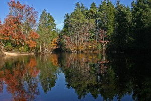
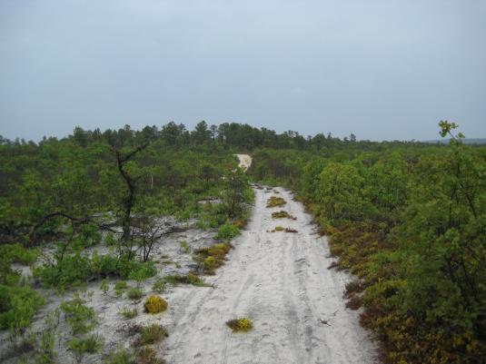
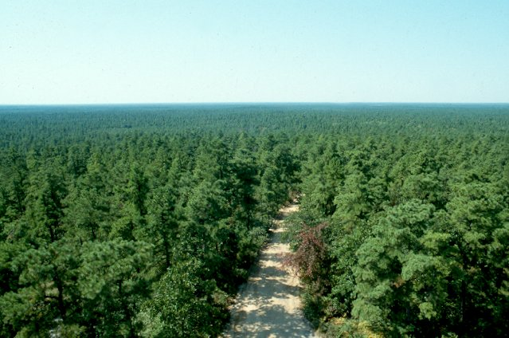
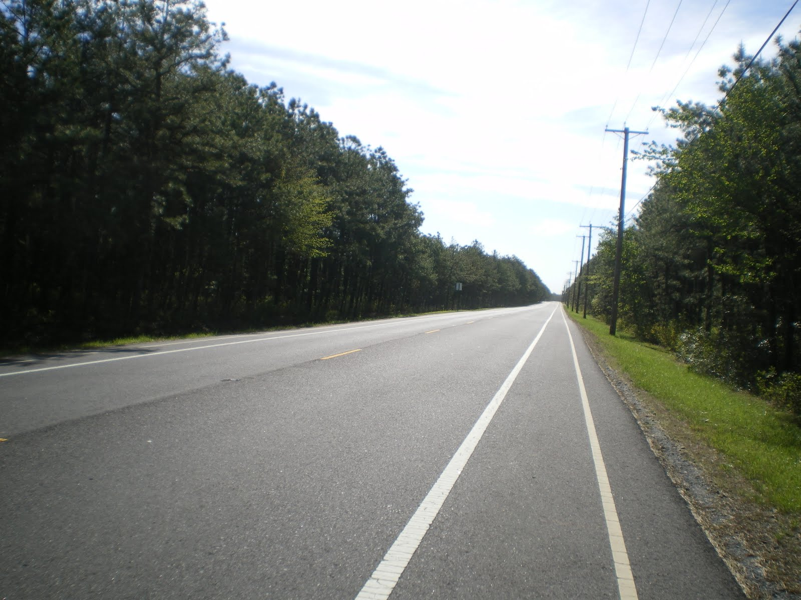

Welcome to our exclusive Pineland tours. You are the leader; you decide where
you want to go. You map your route and we take you to places of interest.
We offer northern, southeastern, and southern Pinelands tour packages or
combinations from all three regions.





Highlights of the northern tour include Historic Whitesbog Village, Pineland
Center at Mt. Misery, and Brenden T. Byrne State Park (Pakim Pond).
Highlights of the southeastern tour include Wharton State Forest, Bass River
State Park, and Tuckerton Seaport.
Highlights of the southern tour include Belleplain State Forest, Heislerville
Wildlife Management Area, Egg Island Fishland Wildlife Management Area, and
Fortescue Fish & Wildlife Management Area.
Protection of our environment is of upmost importance to the tour company and
we hope our customers remember to respect the environment as well.
For more information on the Pinelands, check out these websites: